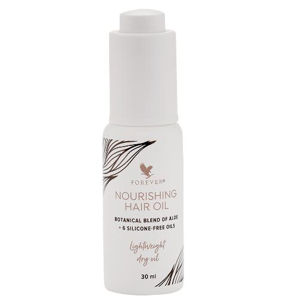
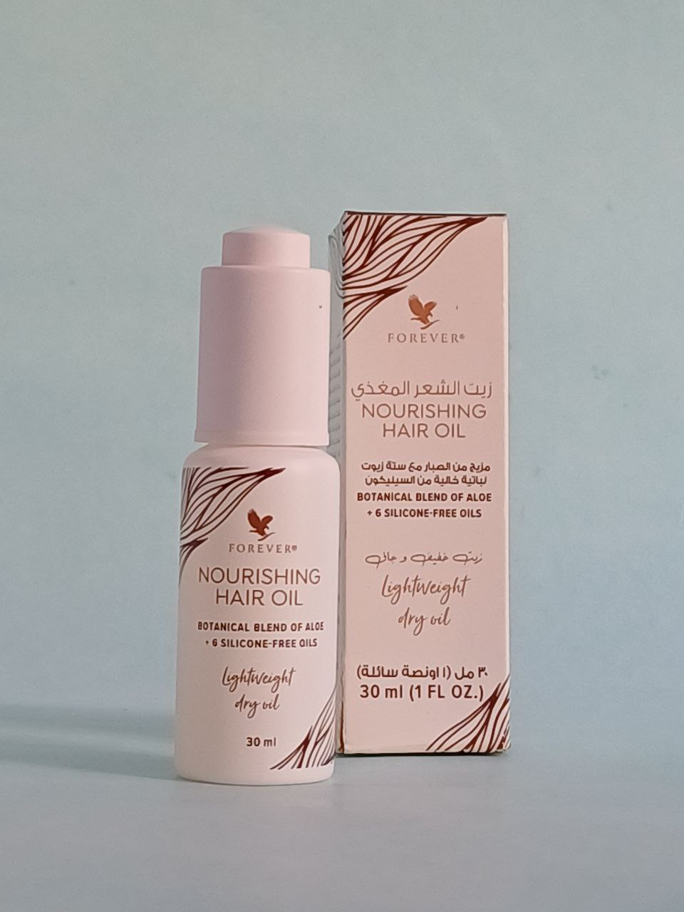
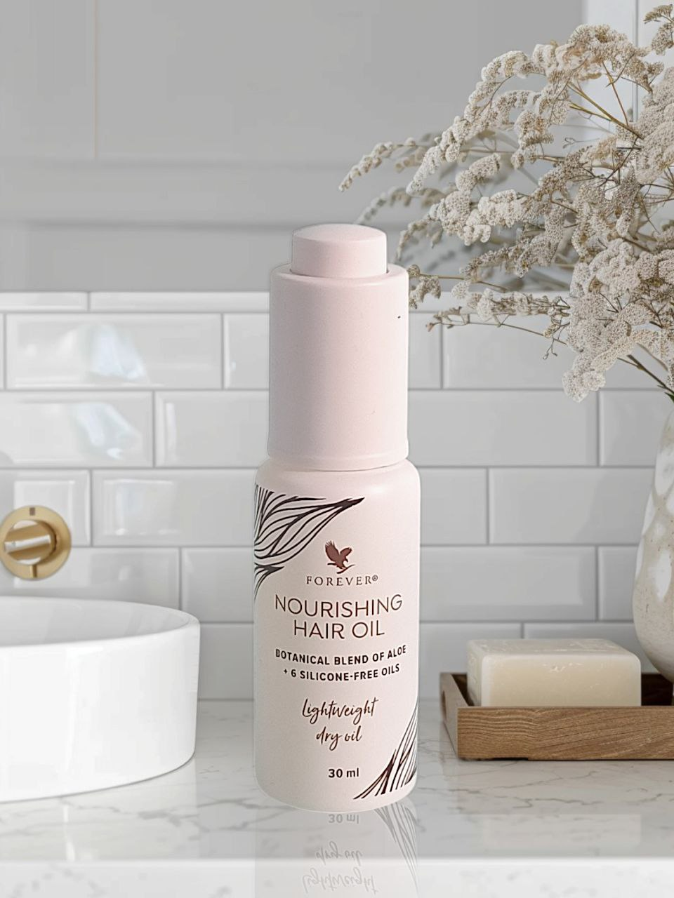

أظهر أفضل ما لشعرك مع مزيج من الصبار ومزيج من ستة زيوت نباتية
تدعم بدائل السيليكون النباتية والمتجددة الشعر من الضغوطات مثل الانحناء أو الاحتكاك أو التقصف. تعمل هذه المكونات أيضا على تنعيم الشعر ، مما يترك ملمسا ناعما خاليا من الوزن. بالإضافة إلى ذلك ، يوفر مستخلص جذر البنجر نعومة للشعر ، مع العناصر الغذائية التي تساعد على منح شعرك مظهرا صحيا.
يحتوي كل من الزيوت الستة على نكهة مغذية مع تعزيز الشعر بملمس خفيف الوزن. يشتق زيت Crambe abyssinica من نبات الخردل ويحمي الشعر من أدوات التصفيف أو الضغوطات البيئية. يحتوي زيت الجوجوبا على تركيبة كيميائية مماثلة للأحماض الدهنية الموجودة بشكل طبيعي في الشعر وفروة الرأس ، مما يوفر الترطيب والترطيب لشعر أكثر
غني بالأحماض الدهنية ومضادات الأكسدة التي تهدئ الشعر وتنعيمه بملمس غير دهني. يتم استخراج زيت تسوباكي من نبات الكاميليا الياباني ويضيف لمعانا ومرونة للشعر. زيت البيكي ، المعروف باسم "Cerrado's Gold" ، هو من ثمرة شجرة موجودة في البرازيل. تضيف الأحماض الدهنية ومضادات الأكسدة لمعانا وتنعيم بشرة الشعر وتقلل من التجعد. غني أيضا بالأحماض الدهنية ، يدعم زيت القرطم الترطيب ومظهر امتلاء الشعر.
هذه الزيوت مدعومة بقوة الصبار الذي يحتوي على فيتامينات مضادات الأكسدة A و C و E ويوفر الرطوبة للشعر. يساعد فيتامين E الإضافي على دعم الشعر ذو المظهر الصحي ويحافظ على الرطوبة في بشرة الشعر للمساعدة في الحماية من التقصف وزيادة اللمعان. مثالي لجميع أنواع الشعر وقوامه ، سيساعد زيت الشعر المغذي من فوريفر على إثراء شعرك.